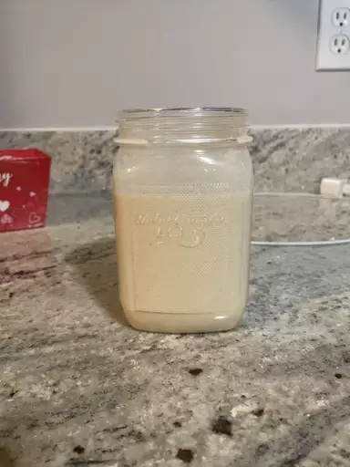

Peanut Butter - Banana Smoothie

(Pic from internet)
Description
Smoothies are an easy way to get your nutrition in the morning (or any time of day). This smoothie contains a healthy mix of macro- and micro-nutrients.
Ingredients
- 3 oz protein powder (whey or alternative)
- 2 tbl peanut butter
- 1 banana
- 1 cup 2% milk (or soy milk)
- 3-4 ice cubes
Steps
- Add ingredients to blender.
- Blend and serve.